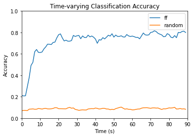

Feedforward Summary
Contents
Feedforward Summary#
A 3-layer feedforward neural network was applied to the HCP dataset for 15-way time series classification of movie clips. Code can be found here.
Dimensions of the data were used for the following purposes:
Movie name - apply as label for classification
ROI - use as features for classification
Subject - split into training and testing sets
Time point - categorize model results as time series of accuracies
Dataset Creation#
The dataset was transformed from a dictionary with movie clip names as keys and arrays of fMRI data as values (see summary) to 3-dimensional arrays of X- and Y- train and test sets. Only the first 90 seconds, equivalent to the first 90 time points, were used.
The data was split with 100 participants for training and 76 participants for testing. A list of participants used for the testing data set was randomly generated. Participant numbers within this list had corresponding ROI feature data and movie labels stored in a testing dictionary. The same was done for participants not selected in the test set, except with a training dictionary. Dimensions for the values of these dictionaries were the same as the in the original dataset, except for ‘testretest’ cases, different runs from the same subject were also compiled as separate batches, converting 4 dimensions to 3.
For each dictionary, 3-dimensional arrays were created containing data across all of the first 90 time points. ROI input data was stored into an X_train or X_test array while movie labels were stored into a y_train or y_test array. ROI feature data was normalized with z-scores, and movie clip labels were one-hot encoded for each time step. Batches with less than 90 time steps were padded with 0.0. Thus, the X input sets had dimensions (batches, time steps = 90, features = 300) and the y label sets had dimensions (batches, time steps = 90, movie clips = 15).
The training datasets and testing datasets were wrapped into tensors to input into the model.
Feedforward Neural Network#
A three-layer feedforward architecture was created using PyTorch. The model consisted of an input layer, a fully connected hidden layer, and another fully connected output layer, as pictured below. The movie corresponding to the index of the maximum value of the 15-dimensional output vector was the predicted label. Padded values were not masked.
The model was fitted using the X_train set as input and the y_train set as output across all considered time points. The Adam optimizer and cross entropy loss function were used in training. Learning rate was set to 0.001 and epochs was set to 500. The training loss across epochs were saved:
The model was then evaluated with the testing data at all 90 time points, and the accuracy was saved. Classification accuracy at each time point was plotted.
Random Inputs Testing#
Random inputs based on the normal distribution were generated 20 times to fill the X_test dataset of dimensions (batches, time steps = 90, features = 300). The fitted feedforward neural network was applied on each of the randomly generated datasets, and a classification accuracy was calculated. The accuracy obtained from testing hte model on the original dataset and the 90th percentile of accuracies obtained from random inputs were compared as time series:
